المفهوم الاصطلاحي والنطاق الزمني للدولة القديمة
العصور المنفية
أُطلق عليها هذا المسمى إشارةً إلى استمرار استقرار ملوكها وتركّز حكوماتهم المركزية وإدارتهم القوية في العاصمة «منف».
عصر بناة الأهرام
استُخدم هذا المصطلح كنايةً عن ضخامة وفخامة ما شُيّد في هذا العصر من أهرامات معمارية عملاقة، لا تزال تمثل مفخرة لعصورها وشاهداً حياً على عظمة وبراعة المهندسين والعمال الذين تكفلوا بإنشائها.
النطاق الزمني (الأسر الحاكمة)
يتفق أغلب علماء المصريات على أن عصر الدولة القديمة يشمل أربع أسر حاكمة (من بداية الأسرة الثالثة حتى نهاية الأسرة السادسة). ويرى فريق آخر من المؤرخين امتداد العصر ليشمل الأسرتين السابعة والثامنة باعتبارهما امتداداً إدارياً شرعياً وتاريخياً قبل الانهيار السياسي الذي ميّز عصر الانتقال الأول.
افتح قاموس ومصطلحات الدرس
قاموس مصطلحات الدولة القديمة وعصر بناة الأهرام
OLD KINGDOM TOUR GUIDE GLOSSARYمصطلحات تخصصية تغطي العمارة الجنائزية وملوك الأسرات من الثالثة إلى السادسة لشرحها أمام الأفواج السياحية الأجنبية:
عصر بناة الأهرام والعصور المنفية (الأسرات ٣–٦، ويرى بعض المؤرخين امتداده إلى ٧–٨).
أول بناء حجري متكامل وضخم في التاريخ بسقارة، أشرف عليه الوزير والمهندس إيمحتب.
العيد الثلاثيني لتجديد شباب الملك وحيويته وشرعية حكمه لعرش البلاد.
حجرة مغلقة ضمن المجموعة الجنائزية للملك زوسر بسقارة.
لوحة صخرية بجزيرة سهيل بأسوان تنسب أحداثها لعهد زوسر ودوّنها كهنة خنوم في العصر البطلمي.
التخطيط الجنائزي التقليدي من الطوب اللبن قبل ثورة زوسر الحجرية، وعاد إليه شبسسكاف في «مصطبة فرعون».
بني سويف/مدخل الفيوم؛ يمثل التداخل المعماري بين حوني (نهاية الثالثة) وسنفرو (بداية الرابعة).
أحد هرمي الملك سنفرو العملاقين في منطقة دهشور (جنوب سقارة)، ويُعرف أيضاً بالهرم المنكسر.
شيده سنفرو في دهشور ويُعد أول هرم كامل الشكل في التاريخ المصري.
عناصر المجموعة الهرمية المتكاملة (تظهر بأكمل صورها في مجموعة خفرع بالجيزة مع الطريق الصاعد).
أحجار شديدة الصلابة نُحتت منها روائع تماثيل الأسرة الرابعة كتماثيل خفرع ورأس جدف رع.
حارس الجبانة المنحوت من كتلة صخرية محلية شمال نهاية الطريق الصاعد لخفرع (جسد أسد ورأس إنسان).
نص أدبي من الأسرة ١٢ يصوّر بلاط خوفو ويتنبأ بميلاد مؤسسي الأسرة الخامسة من صلب الإله رع.
معابد مكشوفة تتوسطها المسلات شيّدها ملوك الأسرة الخامسة تقرباً للإله رع قبل أن يوقفها جد كا رع.
أدب النصائح والتعاليم الأخلاقية والإدارية الذي تركه وزير الملك جد كا رع في الأسرة الخامسة.
أقدم مجموعة نصوص دينية في التاريخ، ظهرت لأول مرة داخل هرم أوناس ثم في هرم تتي.
وظيفة استُحدثت في عهد أوناس لضبط إدارة الجنوب في مواجهة تنامي نفوذ حكام الأقاليم.
بدأت بوادرها في عهد جد كا رع وتفاقمت في عهد بيبي الثاني حتى أدت لسقوط الدولة القديمة.
للاستزادة: شرح المرشد السياحي بالإنجليزية
Tour Guide Field Briefing: The Old Kingdom (The Pyramid Age)
"Welcome to the Old Kingdom—often called the Memphite Period or the Age of the Pyramid Builders—stretching across the Third through the Sixth Dynasties (with some historians extending it through the Seventh and Eighth Dynasties). Here at Saqqara, King Djoser and his brilliant vizier Imhotep launched an architectural revolution: transforming mudbrick mastaba tombs into Egypt's very first monumental stone structure, the Step Pyramid, framed by courtyards for the Heb-Sed jubilee."
"In the Fourth Dynasty, King Sneferu perfected pyramid geometry—evolving from Meidum and the Bent Pyramid to the Red Pyramid at Dahshur, the first true smooth-sided pyramid. His son Khufu raised the Great Pyramid at Giza using roughly 2.3 million stone blocks to an original height of 146 meters, yet ironically his only surviving portrait is a 7.5 cm ivory figurine. Khafre added the most complete pyramid complex and the Great Sphinx, while Menkaure planned a granite casing finished in mudbrick by Shepseskaf, who later chose a giant stone mastaba at South Saqqara."
"By the Fifth Dynasty, royal absolutism declined as the Sun priests of Ra at Heliopolis rose in power, shifting royal budgets from giant pyramids to open Sun Temples. Under Unas, the interior walls of the Saqqara pyramid were inscribed for the first time with the Pyramid Texts—the world's oldest corpus of funerary spells. In the Sixth Dynasty, powerful viziers like Mereruka and Ankhmahor built lavish Saqqara mastabas, while Pepi II's extraordinarily long reign weakened central authority in Memphis and empowered provincial nomarchs, paving the way for the First Intermediate Period."
الأسرة الثالثة: إشكالية التأسيس وثورة زوسر المعمارية
إشكالية المؤسس الأول للأسرة الثالثة (سانخت أم زوسر؟)
جدل أكاديمي وتاريخيتكتنف بداية الأسرة الثالثة إشكالية تاريخية، إذ لم يُحسم بصورة قاطعة الترتيب الدقيق لملوكها ولا تحديد المؤسس الأول لها بشكل مؤكد:
١. دليل بردية تورين
على الرغم من أن «بردية تورين» كتبت اسم الملك «زوسر» بالمداد الأحمر (لتمييزه وإبراز عظمة عصره)، إلا أنها لم تضعه كأول ملوك الأسرة الثالثة.
٢. الملك سانخت
أثبتت الحفائر الحديثة أن زوسر لم يكن أول ملوك الأسرة، بل سبقه ملك يُدعى «سانخت» ترجح أكثر الاحتمالات أنه كان أخاً أكبر لزوسر، ويُحتمل أن أثره الجنائزي استُخدم كنقطة بداية لهرم زوسر المدرج.
٣. الآثار والاختلاف الأكاديمي
خلّد «سانخت» اسمه في «وادي مغارة» بسيناء، وبنى مقبرة في «بيت خلّاف» (بمحافظة سوهاج) تشبه المقبرة التي نسبها بعض المؤرخين لزوسر. وفي المقابل يرجح العالم الألماني «كورت زيته» أن سانخت خلف زوسر في الحكم وليس العكس.
٤. الانتقال نحو الجنوب ثم العودة لمنف
بافتراض أن سانخت سبق زوسر، يفسر ذلك انتقال المقابر إلى الجنوب (بيت خلّاف): بنى سانخت مقبرته هناك وحذا زوسر حذوه في البداية، ثم عدل عن رأيه لاحقاً وفضّل الاستقرار وبناء مجموعته الهرمية في العاصمة «منف».
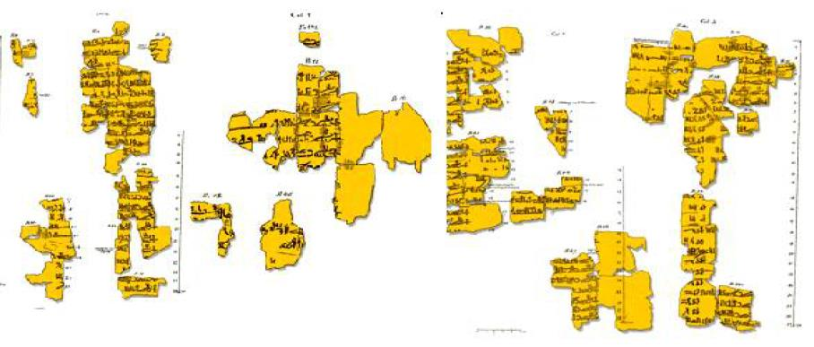
بردية تورين الملكية — ميّزت اسم زوسر بالمداد الأحمر دون وضعه في صدارة الأسرةالملك زوسر (مؤسس المجد المعماري الحجري)
صفحات ٤٧ – ٥٠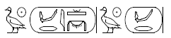
الأسباب السياسية لتصنيفه بداية أسرة جديدة
يُرجح نشوب صراع على العرش بعد وفاة والده الملك «خع سخموي»، وتخلّل فترتهما بعض المغتصبين للحكم من إخوته أو أقاربه؛ فلما استرد زوسر العرش اعتُبر في نظر المصريين مؤسساً لفرع ملكي جديد ومستقل (وهو ما تؤيده بعض القوائم التي تدرج ٢ إلى ٤ ملوك بينه وبين والده).
الأسباب الحضارية والهندسية
أحدث طفرة غير مسبوقة فصلت عهده عن عهد والده، فاستقر في العاصمة «منف» جاعلاً إياها مقراً ثابتاً لدنياه وآخرته، وتُوّج هذا الاستقرار بتشييد «هرمه المدرج» (أول بناء حجري ضخم في التاريخ) فاستحق أن يُتوّج كرأس لأسرة حاكمة جديدة.
الهرم المدرج بسقارة (ثورة العمارة بإشراف إيمحتب)
أول بناء حجري متكامل في التاريخيمثل الهرم المدرج بسقارة نقلة حضارية كبرى أشرف عليها الوزير والمهندس العبقري «إيمحتب»، الذي أحدث ثورة معمارية بالانتقال التدريجي من استخدام «الطوب اللبن» وتخطيط «المصطبة» التقليدية إلى الاعتماد الواسع على الأحجار وتشكيل «الهرم المدرج»، مبتكراً مجموعة جنائزية هائلة محاطة بسور حجري ضخم وتضم مباني إدارية ودينية عكست قوة ورخاء الدولة المركزية.
لم تكن المجموعة مجرد مقبرة بل صرحاً لترسيخ شرعية الملك؛ فقد حملت دهاليز الهرم وجدرانه نقوشاً للملك وهو يحتفل بـ «عيد الحب–سد» (العيد الثالثيني لتجديد شبابه وحيويته لعرش البلاد)، وظهر مرتدياً «التاج المزدوج» (تاجي الشمال والجنوب) في تأكيد قاطع على السيطرة التامة والوحدة الراسخة.
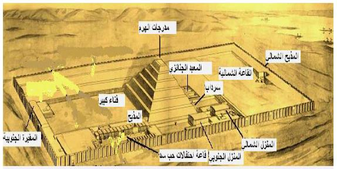
الملك زوسر ولوحة المجاعة (جزيرة سهيل بأسوان)
دُوّنت في العصر البطلميلوحة صخرية منقوشة على صخور جزيرة «سهيل» بأسوان؛ رغم أن أحداثها تُنسب لعهد زوسر، فإن الكهنة الذين دونوا النص هم كهنة المعبود «خنوم» في العصر البطلمي.
مرت بالبلاد سبع سنوات عجاف قلت فيها الحبوب وجفت الثمار وقَلّت الأقوات. فكتب زوسر لحاكم أسوان يستشيره فأشار إلى أن المعبود «خنوم» (رب الشلال) هو المتحكم في النيل. ثم رأى زوسر خنوم في منامه يخبره أن السبب إهمال عبادته، فأصدر الملك مرسوماً بتخصيص الأراضي على ضفتي النيل في منطقة الشلال وقفاً لمعبد خنوم، ففاض النيل ونجت البلاد.
- حيلة كهنوتية لاستعادة النفوذ: يرى فريق أنها حيلة سياسية من كهنة خنوم في عهد بطلميوس إبيفانيس للحصول على مزايا وإقطاعيات بعدما طغت عبادة «إيزيس» في فيلة وازداد كهنتها ثراءً ونفوذاً.
- رأي الادعاءات اليهودية: ربما كانت من اختلاق بعض اليهود الذين استقروا في حامية «إلفنتين» بأسوان منذ عصر بطلميوس الثاني «فيلادلفوس» لتشابه القصة مع تراثهم الديني وترديدها لإثبات جذورهم بالمنطقة زيفاً.
٢ – الملك سخم خت
صفحة ٥١الخليفة المباشر للملك زوسر؛ سار على نهجه في محاولة بناء هرم مدرج بسقارة، إلا أن الأقدار لم تمهله لإتمامه.
- حفائر زكريا غنيم (١٩٥١ – ١٩٥٤م): كشف عنه عالم الآثار المصري البارز محمد زكريا غنيم في سقارة؛ صُمم ليكون هرماً مدرجاً يحيط به سور حجري ضخم على غرار مجموعة زوسر، ولم يكتمل سوى المصطبة السفلية وجزء من الثانية بارتفاع متبقٍ نحو ٧ أمتار.
- الأواني الحجرية: عُثر في دهاليزه السفلية على أوانٍ متميزة من أحجار شديدة الصلابة كـ المرمر والشِّسْت والديوريت.
- المصوغات الذهبية وصندوق الذهب الصدفي: صندوق خشبي يحوي ٢١ سواراً ذهبياً بأحجام متفاوتة، وصندوق ذهبي صغير غطاؤه على هيئة «محارة صدفية» يعكس رقي فن الصياغة المبكر.
٣ – الملك خع با & ٤ – الملك حوني
صفحة ٥٢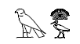
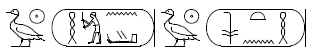
بعد الملك خع با، تولى الملك حوني كآخر ملوك الأسرة الثالثة، وامتدت فترة حكمه لنحو ٢٤ عاماً، ممثلاً نقطة الانتقال المباشرة إلى عصر بناة الأهرام العظام في الأسرة الرابعة.
يحمل دلالتين محتملتين: عسكرية (ضرب المعتدين وصد أي هجوم أو تمرد)، وعمرانية واقتصادية («ضربه الأرض» أي شقها لاستصلاحها وحفر الترع والقنوات للزراعة).
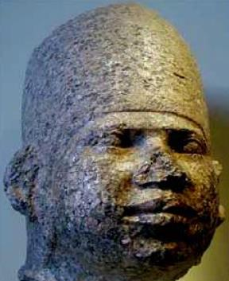
بمحافظة بني سويف؛ يرى الأثري الراحل د. أحمد فخري أن الهرم كان ناقصاً عند وفاة حوني، أو أن خليفته سنفرو (مؤسس الأسرة الرابعة) أضاف الكثير من التعديلات المعمارية إليه.
📜
استزادة للمرشد: افهم التاريخ كقصة — كيف تحوّلت المصطبة الطينية إلى أول صرح حجري مع زوسر وإيمحتب؟
اضغط للتفاصيل
▼
تخيّل أنك تقف في سقارة قبل نحو ٤٧٠٠ عام؛ حتى نهاية العصر العتيق، كانت المقابر الملكية تُبنى من الطوب اللبن على هيئة مصاطب، حتى في بدايات الأسرة الثالثة حين دفن «سانخت» — الذي تشير الحفائر إلى أسبقيته على زوسر — في بيت خلّاف بالجنوب وحذا زوسر حذوه أولاً، قبل أن يعدل عن رأيه ويعود ليستقر في العاصمة «منف». هناك اجتمع طموح الملك زوسر بعد استرداد العرش بعبقرية وزيره ومهندسه «إيمحتب»؛ فابتكرا نقل فكرة المصطبة إلى الحجر وتكديسها في ست درجات شامخة، وأحاطاها بسور ومبانٍ لعيد «الحب–سد» ليعلن الملك للعالم أن وحدة القطرين صارت راسخة إلى الأبد.
"Ladies and gentlemen, what you are looking at is the very moment human architecture changed forever. Before King Djoser and his brilliant vizier Imhotep, royal tombs were built of mudbrick mastabas. After early burials in the south at Beit Khallaf—linked to Sanakht—Djoser chose to anchor his eternity in Memphis. Imhotep transformed mudbrick into monumental stone, stacking mastabas into Egypt's first Step Pyramid and surrounding it with courts where the king could eternally celebrate his Heb-Sed jubilee!"
الأسرة الرابعة: بناة الأهرام العظام
الملك سنفرو («سوريس» عند مانيتون ولقبه «نب ماعت»)
صفحات ٥٣ – ٥٦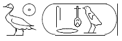
انتقال الحكم وشرعية العرش (وفق بردية إبريس)
أشارت «بردية إبريس» إلى أن سنفرو كان الخلف المباشر للملك حوني. ويرى باحثون أن «مرس عنخ» (أم سنفرو) لم تكن الزوجة الرئيسية لحوني فانتقل الحق الشرعي لابنة حوني الأميرة «حتب حرس»، وتزوجها سنفرو ليكتسب الشرعية الكاملة؛ بينما يفترض رأي معارض انقساماً وضعفاً بأواخر الأسرة الثالثة سيطر خلاله سنفرو وتزوج من ابنة الملك لتوحيد الصفوف، غير أن استقرار البلاد الداخلي يُرجح الانتقال السلس.
سجل «حجر بالرمو» استيراد مصر لـ ٤٠ سفينة محملة بأخشاب الأَرز من الشام في عام واحد من أعوام حكمه.
أمّن مناجم الفيروز والنحاس؛ تصوره نقوش وادي مغارة بتاج «الأتف» والزي الحربي يقمع بدو الصحراء، وقدّسه المصريون لاحقاً كأحد أرباب سيناء وحماتها.
عاد بـ ٧,٠٠٠ أسير وحوالي ٢٠٠,٠٠٠ رأس من الماشية، واستُخدم بعض الأسرى مرتزقة في الجيش وعمالاً بمحاجر سيناء.
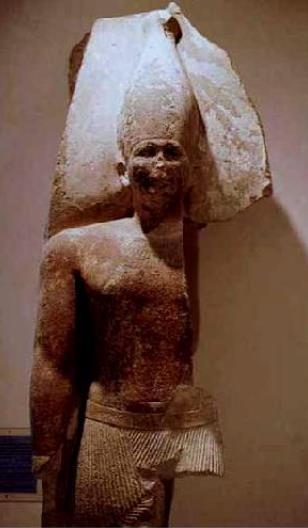
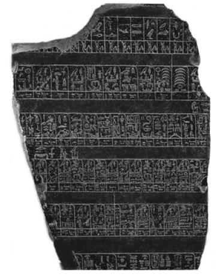
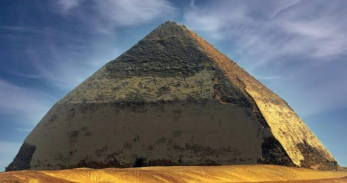
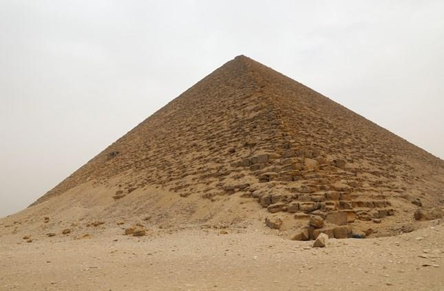
أعظم البنائين (ثلاث أهرامات ضخمة)
- هرم ميدوم (مدخل الفيوم): شيد مجموعته الهرمية الأولى (معبد وادي، طريق صاعد، معبد جنائزي) والتفت حوله مقابر رجال دولته، أشهرها مقبرة ابنه «رع حتب» وزوجته «نفرت» أصحاب التمثالين الشهيرين بالمتحف المصري.
- أهرامات دهشور (جنوب سقارة): شيد هرمين عملاقين هما «الهرم المنحني» (أو المنكسر)، و«الهرم الأحمر» الذي يُعد أول هرم كامل الشكل في التاريخ المصري.
لغز مقبرة الملكة حتب حرس (حفائر ١٩٢٥م)
اكتشف الأثري «جورج رايزنر» عام ١٩٢٥م خبيئة للملكة حتب حرس (زوجة سنفرو وأم خوفو) شرق هرم خوفو بالجيزة: بئر عميق (٣٠ متراً) ضم محفتها وسريرها الذهبي المحفوظين بالمتحف المصري، لكن التابوت كان فارغاً. ويفسر الأثريون ذلك بأن اللصوص نهبوا جثتها من مقبرتها الأولى في دهشور، فكذب الحراس على خوفو خوفاً من بطشه وأخبروه أن المقبرة مهددة مع سلامة الجثة، فأمر بنقل التابوت والأثاث سراً للجيزة دون أن يعلم بفراغه.
الملك خوفو («خنوم – خو – إف – وي»: المعبود خنوم يحميني)
صفحات ٥٧ – ٥٨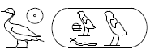
المفارقة: الهرم الأكبر والتمثال الأصغر
رغم شهرته كصاحب أعظم بناء حجري في التاريخ، لم يُعرف عن عهده إلا القليل؛ عُثر على نقوش باسمه في محاجر الصحراء النوبية (شمال شرق أبو سمبل وشمال غرب توشكى قرب مناجم الجمشت) لنقل حجر «الديوريت» للجيزة. ولم يتبق من تماثيله سوى تمثال عاجي صغير طوله ٧.٥ سم بالمتحف المصري بالتحرير.
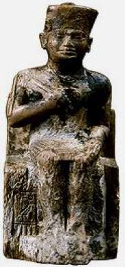
خوفو في التراث (بردية وستكار)
أصبح اسم «خوفو» في العصور اللاحقة بمثابة تميمة قوية نُقشت على الجعارين للحماية. وفي «بردية وستكار» (التي تعود لعصر الأسرة الثانية عشرة) يظهر كملك يبحث عن أسرار السحر والحكمة وتُعرض في بلاطه المهارات السحرية.
المعجزة الخالدة: الهرم الأكبر
- أول وأعظم عجائب الدنيا السبع القديمة والأثر الوحيد الباقي منها.
- المساحة: نحو ١٣ فداناً (قرابة ٥٤ ألف متر مربع).
- الارتفاع: الأصلي ١٤٦ متراً (تهدم نحو ٩ أمتار ليصبح ١٣٧ متراً تقريباً).
- الكتل الحجرية: نحو ٢,٣٠٠,٠٠٠ كتلة يصل وزن بعضها إلى ١٥ طناً.
٣ – الملك جدف رع (ددف رع)
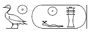
صفحات ٥٨ – ٥٩بعد وفاة خوفو نشب صراع على العرش حول أحقية ابن الزوجة الرئيسية أم الثانوية (بين جدف رع والوريث الشرعي «كا-وعب» و«خفرع»). حسمت «بردية تورين» تولي جدف رع (ابن الزوجة الثانوية)، ولتدعيم شرعيته بعد وفاة أخيه غير الشقيق «كا-وعب» تزوج أرملته الأميرة ذات الدم الملكي الخالص «حتب حرس الثانية».
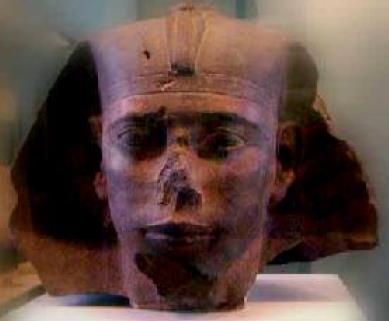
٤ – الملك خفرع
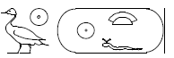
صفحات ٦٠ – ٦١تولى الحكم وسط منازعات مع أبناء أخيه «جدف رع»، ونجح في حسم الصراع وفرض سيطرته واستقرار البلاد. وتُعد مجموعته الهرمية (الهرم الأوسط بالجيزة) من أكمل المجموعات المعمارية الباقية: الهرم، المعبد الجنائزي (شرق الهرم)، الطريق الصاعد، ومعبد الوادي الشهير.
- التماثيل الملكية: أسفرت حفائر معبد الوادي عن روائع نحتية من أحجار شديدة الصلابة كـ البازلت والديوريت بالمتحف المصري بالتحرير.
- تمثال أبي الهول (حارس الجبانة): يقع شمال نهاية الطريق الصاعد؛ نُحت من كتلة صخرية محلية هائلة بجسد أسد (رمز القوة) ورأس إنسان (رمز الحكمة وربما ملامح خفرع نفسه).
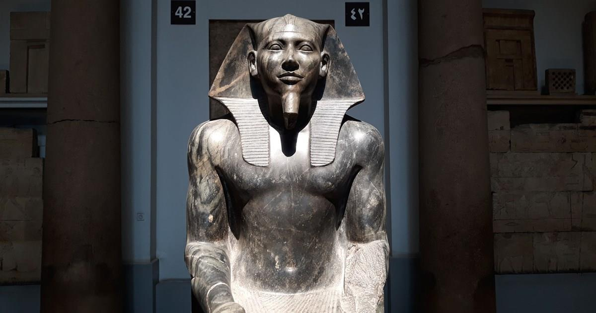
٥ – الملك منكاورع
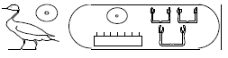
صفحات ٦١ – ٦٢ابن خفرع، تزوج أخته الملكة «خع مرر نبتي»، وشيد الأصغر بين أهرامات الجيزة الثلاثة، لكنه تميز بمحاولة معمارية مكلفة: إكساء واجهته الخارجية بـ الجرانيت (من أسوان) بدلاً من الحجر الجيري؛ توفي بعد إكساء ١٦ مدماكاً (طبقة) فقط، فأتم خليفته شبسسكاف بقية المجموعة (المعبد الجنائزي ومعبد الوادي) بـ الطوب اللبن لضيق الوقت أو لأسباب اقتصادية.
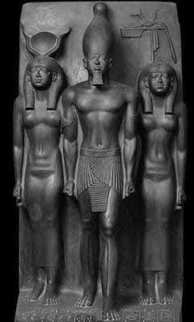
٦ – الملك شبسسكاف والملكة خنت كاوس
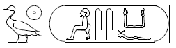
صفحات ٦٣ – ٦٤آخر ملوك الأسرة الرابعة في نظر أغلب الباحثين؛ اكتسب شرعيته بالزواج من الوريثة الشرعية لمنكاورع. قام بـ «التمرد المعماري» متخلياً عن الأهرامات وهضبة الجيزة إلى جنوب سقارة، وشيد لنفسه «مصطبة فرعون» بكتل حجرية ضخمة تضاهي كتل الهرم الأكبر.
ابنة منكاورع وزوجة شبسسكاف؛ يطرح د. سليم حسن أنها طالبت بحقها في العرش وتزوجت على الأرجح من الكاهن الأعظم للمعبود «رع» في «أون» (عين شمس/هليوبوليس)، فانتقل الدم الملكي لكهنة رع. ومقبرتها بالجيزة («الهرم الرابع»، اكتشفت عام ١٩٣١) جمعت بين شكل الهرم والمصطبة، ونُحت معبدها في الصخر وغُطي بالجرانيت مع سبع حجرات صغيرة وتابوت من المرمر.
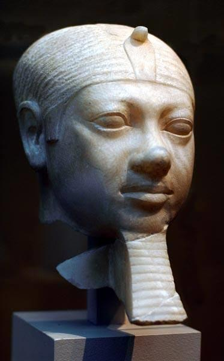
📜
استزادة للمرشد: افهم التاريخ كقصة — من تجارب سنفرو إلى مفارقة خوفو ولغز تابوت حتب حرس
اضغط للتفاصيل
▼
قصة أهرامات الجيزة لم تبدأ عند خوفو، بل في مدرسة التجربة الهندسية التي قادها أبوه «سنفرو» عبر ثلاثة أهرامات كبرى: من ميدوم إلى الهرم المنحني بدهشور ثم إلى أول هرم كامل الشكل وهو الهرم الأحمر. ومن هذه الخبرة المتراكمة انطلق خوفو ليقيم الهرم الأكبر من ٢.٣ مليون كتلة، ومع ذلك تحفظ لنا الأرض مفارقة لا تُنسى: أعظم بنّاء في العالم لم يتبق لوجهه سوى تمثال عاجي لا يتجاوز ٧.٥ سنتيمتر! وحتى أمه الملكة «حتب حرس» لم يخبره حراسها بسرقة جثتها في دهشور، فأمر بنقل تابوتها وأثاثها سراً إلى بئر عميقة بالجيزة ليظل تابوتها فارغاً حتى اكتشافه عام ١٩٢٥م.
"Before Giza rose above the desert, King Sneferu perfected pyramid geometry across Meidum and Dahshur, culminating in the Red Pyramid—the first true smooth-sided pyramid in Egypt. Armed with his father's experience, Khufu raised the Great Pyramid to 146 meters using 2.3 million blocks—yet ironically, the only surviving portrait of his face is a tiny 7.5-centimeter ivory figurine! Nearby, Khafre built the most complete pyramid complex guarded by the Great Sphinx, while Queen Hetepheres' secret 30-meter shaft revealed an intact golden bed beside an empty alabaster sarcophagus."
الأسرة الخامسة: صعود كهنة رع وظهور متون الأهرام
نقطة تحول مفصلية: تراجع المركزية الملكية وتشييد معابد الشمس
تراجع التقديس الملكي والسلطة المطلقة تدريجياً لصالح تنامي النفوذ الديني والسياسي لـ «كهنة المعبود رع» (إله الشمس) في مدينة «أون» (هليوبوليس/عين شمس). وانعكس ذلك على العمارة فتراجع حجم الأهرامات وجودة بنائها، ووجّه الملوك مواردهم لتشييد «معابد الشمس» المكشوفة التي تتوسطها المسلات تقرباً للإله رع؛ وهو التحول الذي تنبأت به قصة بردية وستكار بولادة ثلاثة إخوة من صلب الإله رع ليؤسسوا الأسرة الخامسة.
تسلسل ملوك الأسرة الخامسة وخراطيشهم (صفحات ٦٥ – ٧٠)
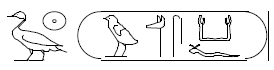
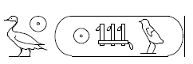
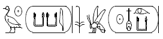
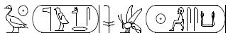
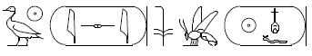
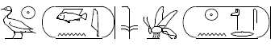
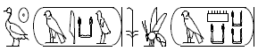
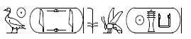
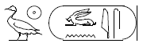
١ – الملك أوسر كاف
٧ سنواتأول ملوك الأسرة الخامسة؛ تذكر «بردية تورين» أنه حكم سبع سنوات فقط. بنى هرمه في سقارة على الجانب الشمالي الشرقي من الهرم المدرج لزوسر. عُثر شرق الهرم على «مائدة قرابين» وجنوبه على أجزاء من المعبد الجنائزي وتماثيل، ولأنه تعرض لنهب وتدمير شديدين في العصور القديمة أُطلق عليه أثرياً اسم «الهرم المخربش».
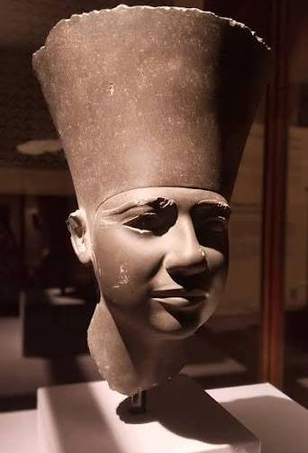
٨ – الملك جد كا رع (إسيسي)
٢٨ أو ٤١–٤٢ عاماً- مدة الحكم: يرجح البعض ٢٨ عاماً، ويرى آخرون ٤١ أو ٤٢ عاماً استناداً لسجلات «إحصاء الماشية والضرائب» في معبده الجنائزي بـ «أبو صير».
- توقف معابد الشمس: أول ملوك الأسرة الخامسة الذين أوقفوا تشييد معابد الشمس المكشوفة؛ مما يعكس تحجيم نفوذ كهنة رع وبداية تنامي العقيدة الأوزيرية.
- بداية اللامركزية: تمتع حكام الأقاليم بصلاحيات واسعة وبنوا مقابرهم في مقاطعاتهم بدلاً من العاصمة، مما أضعف مركزية منف.
- الحكيم «بتاح حُتب»: وزيره العظيم الذي ترك مقبرة فائقة الجمال بسقارة ومجموعة «تعاليم بتاح حتب» حول آداب الحديث، الغنى والفقر، التواضع، الجد في العمل، معاملة الزوجة برفق، الصراحة، الكرامة، الصمت، والقناعة.
٩ – الملك أوناس (ونيس)
نحو ٣٣ عاماًابن جد كا رع وآخر ملوك الأسرة الخامسة؛ تصف «بردية تورين» عهده بالازدهار واحتفل فيه بعيد الحب–سد. ورغم أن هرمه بسقارة هو الأصغر حجماً بين أهرامات الدولة القديمة، فإنه يتمتع بأهمية استثنائية:
- متون الأهرام (Pyramid Texts): ظهرت لأول مرة في التاريخ على جدران الحجرات الداخلية ودهاليز هرمه (تعاويذ وصلوات لحماية الملك المتوفى)، وهي تدوين رسمي لعقائد شفوية قديمة.
- التحولات الدينية والإدارية: استمرار تراجع كهنة رع وارتفاع نفوذ كهنة «بتاح» و«أوزير» وكهنة هرم أوناس؛ واستحداث وظيفة «مشرف مصر العليا» (حاكم الصعيد) ولقب «حارس القصر» لمواجهة اللامركزية.
- ابتكارات فنية: مناظر المجاعة على الطريق الصاعد، نحت قرص الشمس المجنح لأول مرة على المعابد، وتصوير الزرافة والسلحفاة والمرأة القزم. توفي ابنه الذكر الوحيد في حياته فلم يترك وريثاً ذكراً مؤكداً.
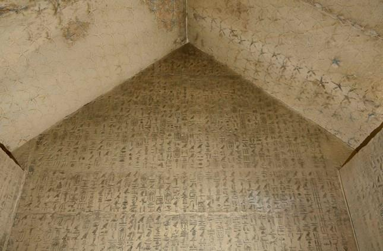
📜
استزادة للمرشد: افهم التاريخ كقصة — كيف صعد كهنة الشمس ثم حوّل أوناس جدران هرمه الأصغر إلى أول كتاب مقدس منحوت؟
اضغط للتفاصيل
▼
في الأسرة الخامسة تغيّرت معادلة القوة؛ لم يعد الملك قادراً على احتكار موارد الدولة في هرم عملاق كالجيزة، بل تقاسمته السلطة الدينية الصاعدة لكهنة «رع» في أون (التي روت عنها بردية وستكار ميلاد الإخوة الثلاثة من صلب رع)، فتقلص حجم الأهرامات وارتفعت مسلات معابد الشمس المكشوفة. ومع نهاية الأسرة، جاء أوناس ليبتكر الخلود بالكلمة لا بالحجم وحده: فبينما بُني هرمه بسقارة كأصغر أهرامات الدولة القديمة، نقش على جدران حجراته الداخلية لأول مرة في التاريخ «متون الأهرام» لحماية الملك في رحلته الأبدية.
"In the Fifth Dynasty, royal power shifted dramatically. As the priests of Ra at Heliopolis gained immense influence, pyramids became smaller and resources flowed into open-air Sun Temples crowned with obelisks. Later, King Djedkare Isesi halted Sun Temple construction and empowered provincial governors—while his vizier Ptahhotep composed timeless moral wisdom. Finally, King Unas made up for having the smallest royal pyramid by carving the world's oldest religious texts—the Pyramid Texts—onto his inner chambers, turning stone walls into an eternal guide for the afterlife."
الأسرة السادسة: من الملك تتي حتى نهاية الدولة القديمة
ملوك وملكات الأسرة السادسة وخراطيشهم
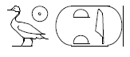
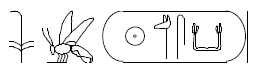
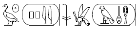
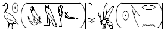
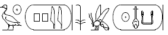
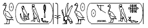
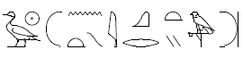
١ – الملك تتي وعصر الوزراء الأقوياء
صفحات ٧١ – ٧٢اكتسب «تتي» شرعيته بزواجه من الأميرة «إيبوت الأولى» (ابنة الملك أوناس) وسط معارضة عنيفة من رجال بلاط أوناس وكهنة رع الناقمين. أظهر وفاءً سياسياً لأوناس بإتمام بعض منشآته، لكنه لقي نهاية مأساوية حيث قُتل على يد حراس القصر أو نتيجة مؤامرة. بلغ ارتفاع هرمه نحو ٥٢.٥ متراً، وجاءت عمارته الخارجية متهالكة لكنه تميز من الداخل باحتوائه على «متون الأهرام» (ثاني هرم بعد أوناس).
وزير تتي وزوج ابنته؛ من أضخم وأجمل مصاطب الأفراد بسقارة وتزخر بمناظر ونصوص يومية ودينية.
تُعرف بـ «مقبرة الطبيب»؛ تضم تفاصيل طبية دقيقة أشهرها «منظر الختان» كأحد أقدم المناظر الطبية التي توثق ختان صبي.
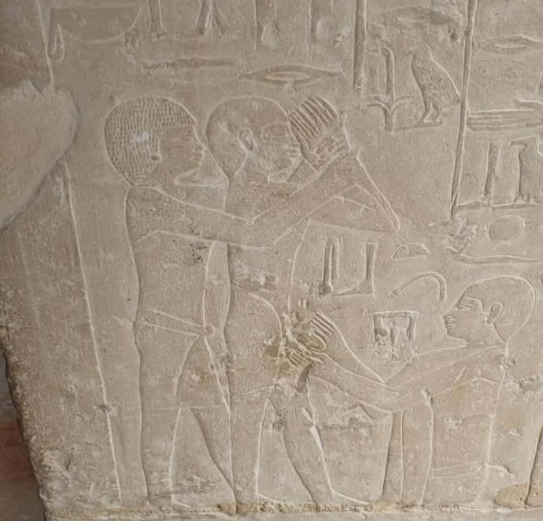
٥ – الملك ببي الثاني (أطول فترة حكم والانهيار)
صفحات ٧٣ – ٧٤خلف الملك «مر إن رع الأول»، ويُعد عهده علامة فارقة لطوله الاستثنائي وتداعياته الخطيرة: تذكر «بردية تورين» أنه حكم ٩٠ عاماً، ويرفعه «مانيتون» إلى ٩٤ عاماً (اعتلى العرش طفلاً في السادسة وعاش حتى جاوز المائة)، بينما يرجح باحثون محدثون قرابة ٦٤ عاماً.
- الانهيار الإداري: أدت شيخوخة الملك لشيخوخة أجهزة الدولة وضعف السلطة المركزية في منف، مع ازدياد غير مسبوق لنفوذ حكام الأقاليم الذين ورّثوا مناصبهم لأبنائهم وتحولوا لأمراء شبه مستقلين.
- سياسة التهدئة والمرتزقة: اعتمد على التحالفات مع قبائل الجنوب وتجنيد العمالة والمرتزقة من النوبيين والليبيين لسد العجز في الجيش النظامي.
- التراجع المعماري (جنوب سقارة): بنى هرمه من أحجار صغيرة ورديئة الجودة مما يعكس التدهور الاقتصادي مقارنة بالأسرة الرابعة، ومن أبرز منحوتات عهده تمثال الملكة «عنخس إن ببي» مع ابنها الملك ببي الثاني، لتختتم الأسرة بالملك مر إن رع الثاني والملكة نيت إقريت.
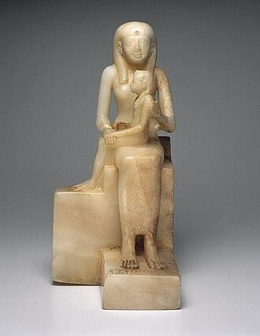
📜
استزادة للمرشد: افهم التاريخ كقصة — من عصر الوزراء الأقوياء إلى أطول حكم في التاريخ وسقوط المركزية
اضغط للتفاصيل
▼
بدأت الأسرة السادسة مضطربة بزواج «تتي» من «إيبوت الأولى» ابنة أوناس وانتهت باغتياله على يد حراس القصر أو في مؤامرة، وبينما تهالكت عمارة هرمه من الخارج كانت مصاطب وزرائه أمثال «مريروكا» و«عنخ ماحور» (صاحب منظر الختان الطبي) تتفوق فخامة واتساعاً في سقارة! ثم جاء الطفل «بيبي الثاني» ليتربع على العرش في السادسة من عمره ويعيش عمراً استثنائياً (٩٠ عاماً في بردية تورين و٩٤ عند مانيتون)، فمع شيخوخة الملك شاخت الدولة في منف، وتورّث حكام الأقاليم مناصبهم وبنوا مقابرهم في أقاليمهم، حتى انفرط عقد الوحدة المركزية ودخلت البلاد عصر الانتقال الأول.
"When you walk through the Sixth Dynasty tombs at Saqqara, notice a telling contrast: King Teti—who was reportedly assassinated in a palace conspiracy—left a crumbling pyramid exterior, yet his viziers Mereruka and Ankhmahor built lavish stone mastabas filled with vivid daily and medical reliefs, including the famous circumcision scene. Later, Pepi II took the throne as a six-year-old boy and ruled for decades—up to 90 or 94 years in ancient sources. As the king grew old, the central government in Memphis grew weak, provincial nomarchs inherited their offices like local princes, and the glorious Pyramid Age gradually dissolved."
مذكرة المرشد السياحي: كيف تشرح آثار الدولة القديمة؟
١. في سقارة أمام هرم زوسر المدرج
اشرح للسائح أن هذا الصرح هو نقطة التحول من مقبرة «المصطبة» المبنية بالطوب اللبن إلى أول بناء حجري متكامل في التاريخ بإشراف العبقري إيمحتب، وأن الأفنية المحيطة لم تكن مجرد مقبرة بل مسرحاً لطقوس عيد الحب–سد لترسيخ شرعية الملك.
٢. في دهشور: من المنحني إلى الأحمر
اربط للسائح تطور التجربة الهندسية عند الملك سنفرو: بدأ بالعمل على هرم ميدوم ثم شيّد في دهشور الهرم المنحني (أو المنكسر) وصولاً إلى الهرم الأحمر كأول هرم كامل الشكل في التاريخ المصري.
٣. على هضبة الجيزة والمتحف المصري
سلّط الضوء على المفارقة المدهشة للملك خوفو بين أضخم هرم في التاريخ (١٤٦ متراً أصلاً بنحو ٢.٣ مليون كتلة) وأصغر تمثال باقٍ له من العاج (٧.٥ سم)، ثم اعرض اكتمال عناصر المجموعة الهرمية في عهد خفرع وارتباطه بتمثال أبي الهول.
٤. هرم أوناس ومقابر الوزراء بسقارة
توقف عند هرم أوناس لتبيّن كيف عوضت متون الأهرام صغر حجم الهرم لتصبح أقدم نصوص دينية مدوّنة في التاريخ، ثم انتقل إلى مصاطب كبار رجال الدولة في الأسرة السادسة كـ مريروكا وعنخ ماحور ومنظر الختان الطبي.
افتح تدريبات وأسئلة الدرس
اختبر فهمك: أسئلة الدولة القديمة (المبحث الثالث)
اختر الإجابة الصحيحة في الأسئلة العشرة التالية، ثم تابع أسئلة «صح أم خطأ» و«الأسئلة المقالية» بالأسفل:
النتيجة: لم تبدأ بعد